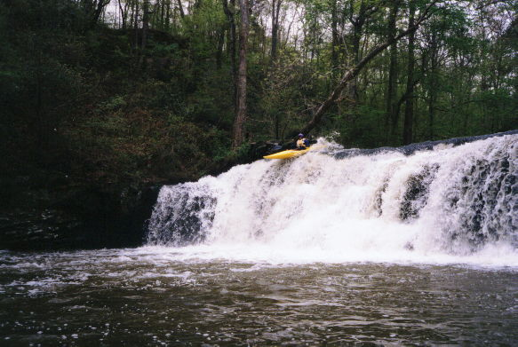
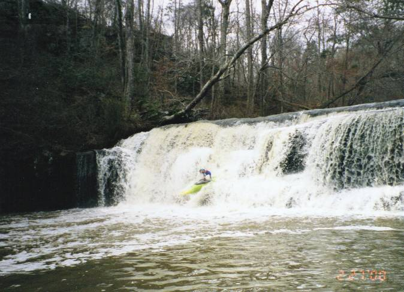
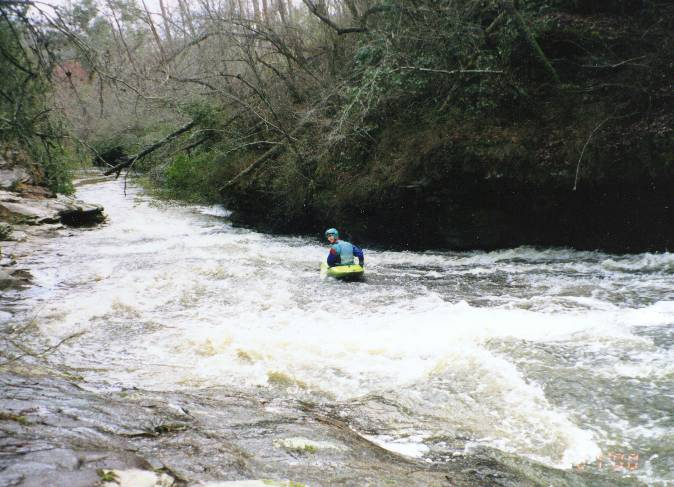

|  |
Jim Dowdy tackles
the opening 15' waterfall on Graves. Keep those nose plugs handy,
Tyson's processes a lot of chickens. |
|  |
If you run the
falls below the minimum level, you may experience pain. John Parker
demonstrates what it is like to snap the old neck at 4.5'. 4.7' is
the minimum in my book. |
|  |
Once again, this
normally fun slide right after the falls only induces boat wear at lower
than recommended levels. John Parker turns around to say "I'm schtuck" |